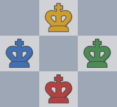

Know More About Chess
4 Player Chess -
This Four-player chess is a variation of original classical chess that involves four players, each controlling their own set of pieces. In this game, players must not only focus on their opponents directly in front of them, but also keep an eye on the actions of their two other opponents, adding a complex layer of strategy and tactics to the game. With four players, the game is more dynamic and fast-paced players constantly adapt to changing situations and think several moves ahead. The rules and regulations are exactly the same as the traditional 2-player chess for example, castling, pawn promotion at 8th rank, and piece moves, checkmate and stalemate positions, the pieces all being the same (pawns, rooks, knights, bishops, queens, kings) etc. This game will have a change of chess board layout to adjust to 4 player variation. The main middle 64 squares(8 rows and 8 files) will be the same but each side will have it's own additional 3 rows on their side with 2 rows containing their pieces and 1 row blank.
History -
al-Biruni, was a Khwarazmian Iranian scholar In his “Encyclopedia of Indian culture” contains the description about “Chaturanga” a four handed board game which was played using a four-faced dice, which was unknown to arabs in late 800th century AD. The four-faced die was rolled to determine which piece was to play.That leads us to say that not only 4-player chess but also chess itself originated from India.
Organised chess arose in the 19th century. Chess competition today is governed internationally by FIDE (the International Chess Federation). Commonly referred to by its French acronym FIDE (/ˈfiːdeɪ/ FEE-day Fédération Internationale des Échecs) From the Early 18th century, Many presented their versions of Four handed chess such as George Hope Verney in 1881, M. E. Hughes-Hughes in 1888, K.E.G., Dessau in 1784 were one of the most accepted and played versions of four handed chess. The biggest and most well known club of the variations was the Four-handed Chess Club, founded by George Hope Lloyd Verney. It began in 1884, in London. As none of the variations of four handed chess.
The rules of chess as we know them today emerged in Europe at the end of the 15th century, with standardisation and universal acceptance by the end of the 19th century. Today, chess is one of the world's most popular games, played by millions of people. The game enjoyed a considerable following until the end of the 19th century (the White collection club has a score book of it) after which support slowly declined. According to David B. Pritchard, Four-player chess "is generally understood to be a game played with two sets on a standard board with four extensions, one on each side, usually of 8x3 squares (arguably the best arrangement) but sometimes 8x2 or 8x4, on which the pieces are set up in the normal array positions.
The rules of chess as we know them today emerged in Europe at the end of the 15th century, with standardisation and universal acceptance by the end of the 19th century. Today, chess is one of the world's most popular games, played by millions of people The game enjoyed a considerable following until the end of the 19th century (the White collection club has a score book of it) after which support slowly declined. According to David B. Pritchard, Four-player chess "is generally understood to be a game played with two sets on a standard board with four extensions, one on each side, usually of 8x3 squares (arguably the best arrangement) but sometimes 8x2 or 8x4, on which the pieces are set up in the normal array positions.
Four-Handed Chess is loosely any variant for four players. More specifically, it is generally understood to be a partnership game played with two sets on a standard board with four extensions, one on each side, usually of 8x3 squares (arguably the best arrangement) but sometimes 8x2 or 8x4, on which the pieces are set up in the normal array positions. The four-handed game dates from the 18th century and enjoyed considerable popularity,particularly in Germany but also in England - The Philidorian reported (1838) ‘The game of chess for four is advancing daily in fashion and favor with the British Public’. The year before it had been described as coming from Germany, ‘the only country where it is practised’.
During the half-century 1825-1875, numerous booklets appeared, mostly in the U.K. but also in Europe and America, giving basic rules for four-player chess. Almost all of these, some little more than pamphlets, carried only the name of the publisher. The game was dismissed as ‘a kind of whist’ (Le Palamède). Another theory has the game originating in Russia.
These are some of the relevant books, articles and other sources for literature survey on chess and its variants -
- "The Art of Attack in Chess" by Vladimir Vukovic: This book focuses on attacking play and is considered one of the best books on the subject.
- "Silman's Complete Endgame Course" by Jeremy Silman: This book covers all the essential endgame knowledge that every serious chess player should have.
- "Chess Tactics for Champions" by Susan Polgar: This book is geared towards intermediate to advanced players and covers a wide range of tactical ideas.
- "The Immortal Game" by David Shenk: This is a book about the famous game between Adolf Anderssen and Lionel Kieseritzky, played in 1851. The game is considered one of the greatest of all time and is still studied by chess players today.
- "The Psychology of Chess" by Fernand Gobet: This book looks at the cognitive aspects of chess and how the mind works when playing the game.
- "Middlegame Planning" by Peter Romanovsky: This book covers planning and strategy in the middle game and is a classic text in chess literature.
- "Winning Chess Tactics" by Yasser Seirawan: This book covers a wide range of tactical ideas and is geared towards players of all levels.
- "Modern Chess Openings" by Nick de Firmian: This book is a comprehensive guide to all the major chess openings and is considered a must-have for serious chess players.
- "The Queen's Gambit" by Walter Tevis: This is a novel about a young girl who becomes a chess prodigy and goes on to compete at the highest levels of the game. It was recently adapted into a popular Netflix series.
Game Rules
- Each player will have a set of pieces of the given color.
- Pawns will march only forward and will be promoted on 8th rank, same as classical 2-player chess.
- Players can play in teams or as individuals.
- Every piece will be counted same as the traditional 2-player board game and checkmate will be counted as 20 points.
- When the game ends by last player standing or timeout the rankings will be displayed based on points scored by each player i.e 1st 2nd and 3rd.
- As of team mode, you have to checkmate either of your opponents to win the match.Pawns will march only forward and will be promoted on 8th rank, same as classical 2-player chess.
- You have to capture opponents pieces to gain points.
- There will be a points based scoring system to determine the rankings in Individuals.
🤔Lets solve some queries:
Four Player Chess is even more fun with friends! Click the 'Play' button. From there, you can choose four player chess! You can further choose between individual or teams option.
PS: four player variant is only desktop compatible
Pawn Promotion? ➡️ Refer Game rules
Piece capture in teams? ➡️ You cannot capture your teamate's piece